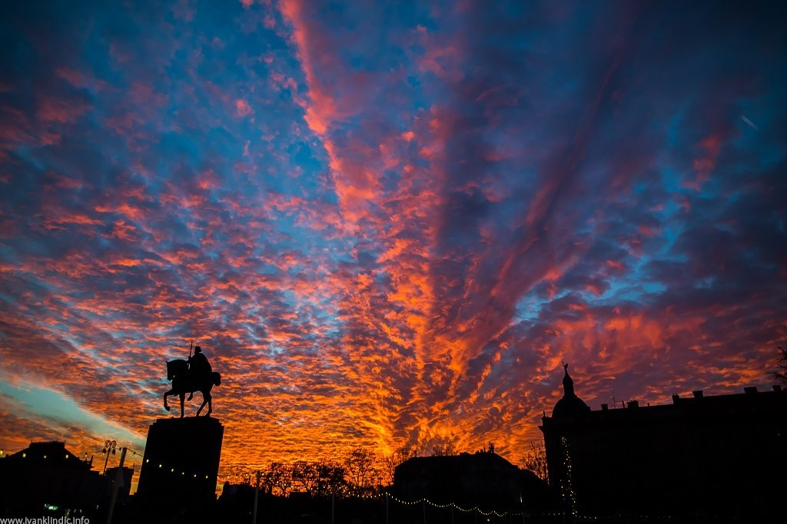
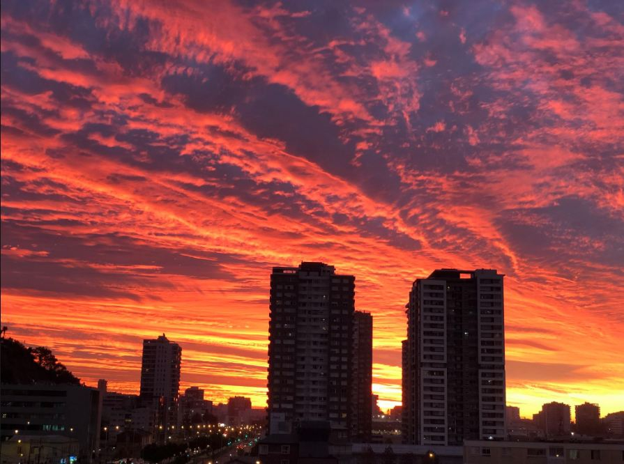

Aquí estoy, contemplando el atardecer desde mi ventana, y reflexionando sobre qué es la felicidad.
Yo lo tengo claro: la felicidad está en tener la capacidad y la actitud de disfrutar de esos pequeños momentos que nos regala la vida.
¿Por que nos gusta tanto verlo?
Me gusta ver atardecer. Intento no perdérmelo ningún día. Es una cita
conmigo mismo y con el ahora. Me gusta esperar justo ese instante en el que el sol
nos da su cálido adiós, exhausto pero satisfecho, y da paso a la luna,
enérgica, con energías renovadas y dispuesta a iluminar nuestras noches. Y
en ese paso de testigo, el cielo nos regala una feria de colores, amarillos,
rojos, naranjas, grises… y las nubes pierden su timidez y se muestran
ardientes y confiadas.

Para mí es un momento importante del día. Ese momento en el conecto
conmigo mismo, reflexiono sobre mi día y en muchas ocasiones sobre el
rumbo que esa llevando mi vida. La vida nos regala un día más, otra
oportunidad para disfrutar de la felicidad. ¿He sabido aprovecharlo? Hay
días que pienso que me he dejado llevar por el día, como si fuera un palito en un riachuelo,
arrastrada por la corriente. Sin embargo, hay otros días que, al igual que el sol,
me siento satisfecho, de las sonrisas que he dibujado en mi cara
y en la de los demás, de los instantes que he saboreado, de la felicidad que me he
encontrado en cada detalle, o de la felicidad que he creado yo.
Por otro lado, reflexiono sobre nuestra existencia. El atardecer me conecta
con la tierra, me recuerda cuán pequeña soy, y qué grande en realidad. El
tiempo se consume, día a día. El sol seguirá regalando atardeceres cuando
yo ya no esté. No lo pienso con pena, sino justo lo contrario. Creo que es
bueno recordar esto todos los días. Tener esto en mente me ayuda
a disfrutar de estos pequeños instantes; enfocar mis días, horas, minutos
y segundos en lo que de verdad me importa.
Me gusta ver atardecer. Captar la esencia de ese momento, único e irrepetible.
Porque la felicidad y la tranquilidad está en los pequeños momentos en los que podemos
reflexionar sobre toda nuestra existencia.

¿Como pintar un atardecer?
Terminos y Definiciones
Atardecer/Ocaso
El ocaso es el atardecer o el anochecer, el momento que el Sol se pone, se oculta o desaparece en el horizonte,
en dirección al oeste. Esto ocurre por efecto de la rotación de la Tierra, por tanto, el Sol no desaparece si no
que atraviesa el horizonte pasando de la zona visible a la zona no visible del hemisferio. El ocaso es el acontecimiento que precede
a la noche, es el fin del día, y ocurre todos los días y en todas las regiones del mundo entre el Ártico y el Antártico.
Felicidad
La felicidad es el estado emocional de una persona feliz; es la sensación de bienestar y realización que experimentamos
cuando alcanzamos nuestras metas, deseos y propósitos; es un momento duradero de satisfacción, donde no hay necesidades
que apremien, ni sufrimientos que atormenten.
Nube
Una nube es un hidrometeoro que consiste en una masa visible compuesta de cristales de hielo o gotas de agua microscópicas suspendidas
en la atmósfera. La ciencia que las investiga es la nefología (del griego nephos 'nube'); en ella se investigan las nubes y su formación,
composición, densidad, temperatura, forma, evolución, movimiento, agrupación y clasificación. Es una rama de la meteorología.
Vida
El concepto de vida puede ser definido desde diversos enfoques. La noción más habitual está vinculada a la biología, que sostiene que la vida
es la capacidad de nacer, crecer, reproducirse y morir. En este sentido, la vida es aquello que distingue a hombres, animales y plantas, por ejemplo,
de los objetos como una roca o una mesa.
Día
Un día es un periodo temporal de 24 horas. Ese es el tiempo que le lleva a la Tierra realizar un giro completo sobre su eje. Por lo tanto,
un día equivale a una vuelta completa de nuestro planeta sobre su propio eje.